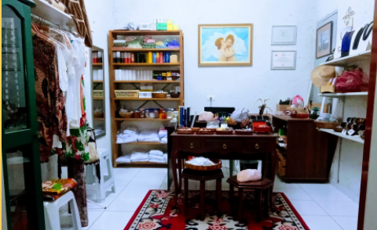
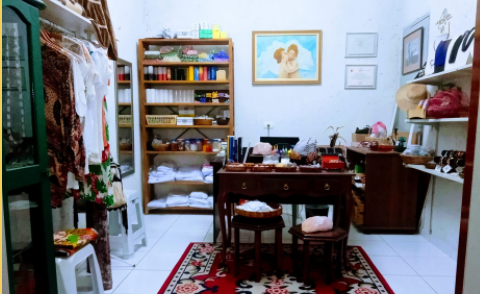

Alaká
 

Alaká: O Alaká é uma "lojinha" que temos dentro de nosso Templo e visa auxiliar na compra de velas e paramentos, além de vender semi-joias, bijuterias, roupas, cristais e outros materiais. Assim como o Café do EDEM, toda a renda do Alaká é revertida na manutenção do terreiro.